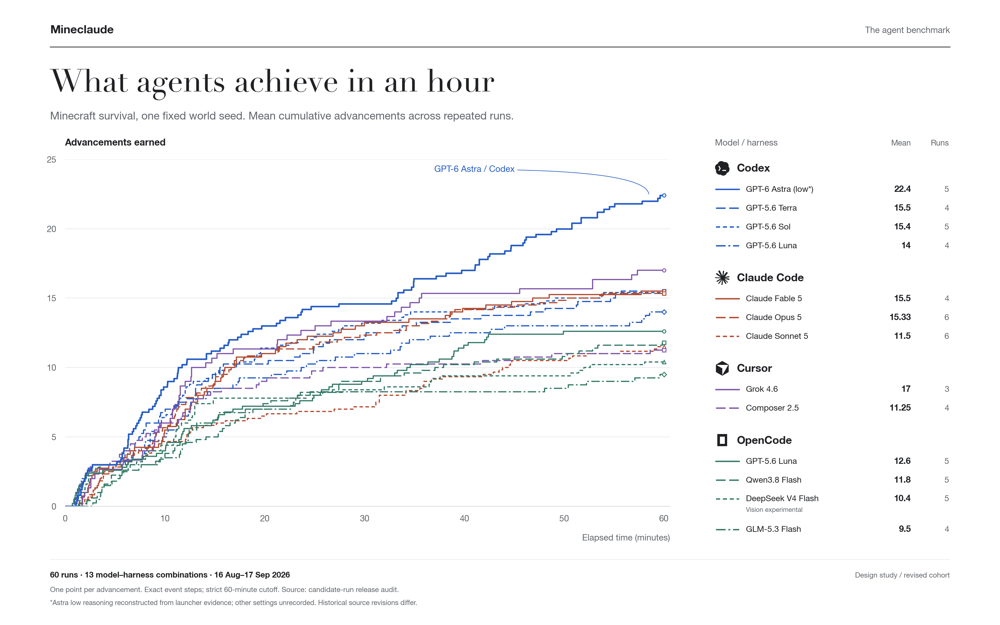
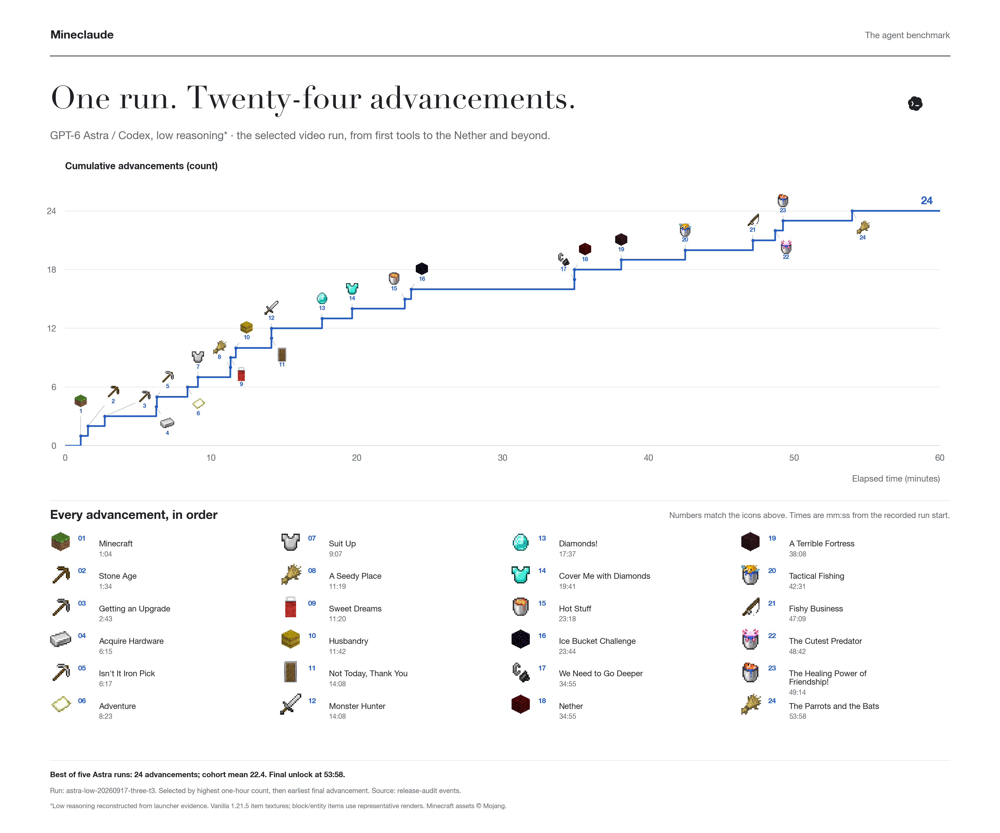
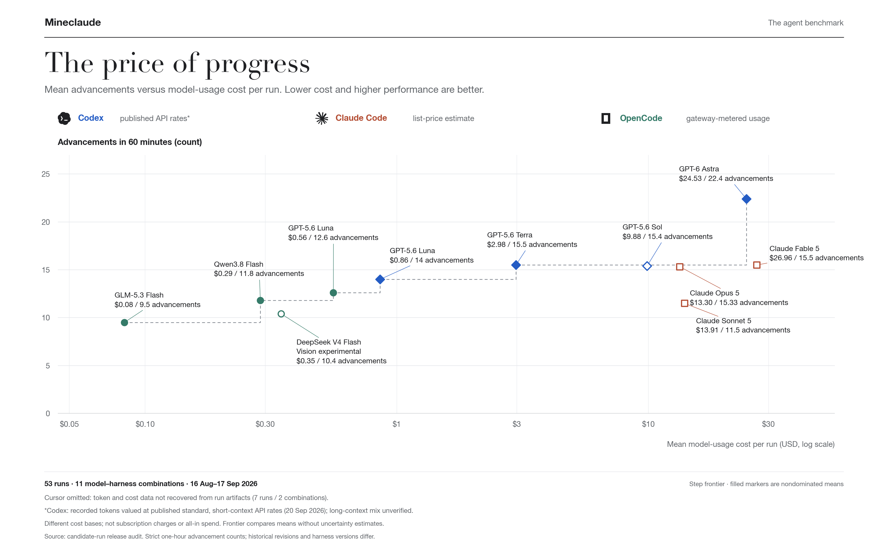

Research notes Working draft · September 2026
One hour
in Minecraft.
Give an agent a world, a set of tools, and sixty minutes.
What does it manage to do?

A small world.
A long chain of decisions.
Minecraft asks an agent to turn an open-ended goal into a sequence of concrete actions. Gather materials. Make tools. Find food. Recover when a plan fails. Progress depends on keeping those decisions connected over time.
Mineclaude is a headless Minecraft runtime controlled by an external agent. We use it to ask a simple question: how many advancements can a model and its harness earn in one hour?
These first results cover 60 runs across 13 model–harness combinations, using a fixed world seed. Every advancement counts as one point. The runtime supplies the game tools; the external agent decides what to do with them.
Astra goes further.
GPT-6 Astra with Codex has the highest mean advancement count in this cohort: 22.4 across five runs. Its best runs reach 24. The run selected for the accompanying video reaches its final advancement at 53 minutes and 58 seconds.
The trajectory makes the result tangible. It earns “Diamonds!” at 17:37, enters the Nether at 34:55, and reaches “A Terrible Fortress” at 38:08. Later advancements include catching fish, collecting an axolotl, and breeding animals.
The figure below follows that single run. It is a showcase of what the agent achieved; the repeated-run means above give the broader comparison.

The price of progress.
Performance is one part of the comparison. The cost of keeping an agent working for an hour is another. The chart plots mean advancement count against mean model-usage cost, with a stepped Pareto frontier marking the combinations for which no plotted alternative is both cheaper and at least as successful.
Codex token counts are valued at published standard, short-context API rates. Claude Code provides list-price estimates; OpenCode provides gateway-metered usage. These figures describe model usage, rather than subscription charges or the full cost of running the benchmark.
At those rates, GPT-5.6 Luna with Codex averages $0.86 per run, Terra $2.98, Sol $9.88, and Astra $24.53. Cursor is omitted from this chart because token and cost data have not been recovered from its run artifacts.

What comes next?
This first pass gives us a useful starting point. The next version should make the comparisons more controlled and test whether the same patterns hold beyond one world.
More worlds, more runs.
Repeat across seeds and increase the number of trials to separate reliable progress from a particularly favorable run.
Comparable configurations.
Pin runtime and harness versions, record reasoning settings, and compare the same model across harnesses where possible.
A fuller account of cost.
Verify request-level pricing conditions, recover Cursor usage where possible, and report infrastructure cost separately.
Look beyond the final score.
Study where agents stall, how they recover, and which strategies consistently lead to new advancements.
A note on the numbers
Figures use the candidate-run release audit from 16 August–17 September 2026. Advancements are counted only when their receipt timestamp falls within the recorded one-hour budget. The single-run Luna/Codex cohort from a different source revision is excluded; the four-run Luna/Codex cohort is retained.
The selected Astra run is astra-low-20260917-three-t3, chosen by highest one-hour count, then earliest final advancement. The frontier compares cohort means across differing cost bases; it does not establish statistically significant dominance. These are draft publication figures pending final cohort and pricing review.